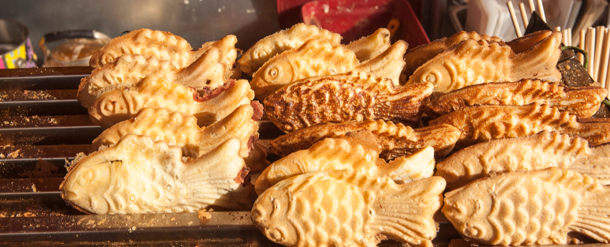

붕어빵의 역사와 유래
붕어빵은 일본의 타이야키에서 유래한 음식으로, 1930년대 일제강점기에 한국에 들어왔습니다. 타이야키는 일본어로 '도미 구이'를 의미하며, 도미 모양의 빵이었지만 한국에서는 붕어 모양으로 변형되어 '붕어빵'이라는 이름으로 불리게 되었습니다.
1950년대 이후 한국 전역으로 퍼져나가며 겨울철 대표 간식으로 자리잡았고, 1990년대에는 붕어빵 장수가 겨울이면 거리 곳곳에서 볼 수 있는 풍경이 되었습니다. 오늘날까지도 붕어빵은 한국인의 추억과 정서가 담긴 특별한 음식으로 사랑받고 있습니다.
